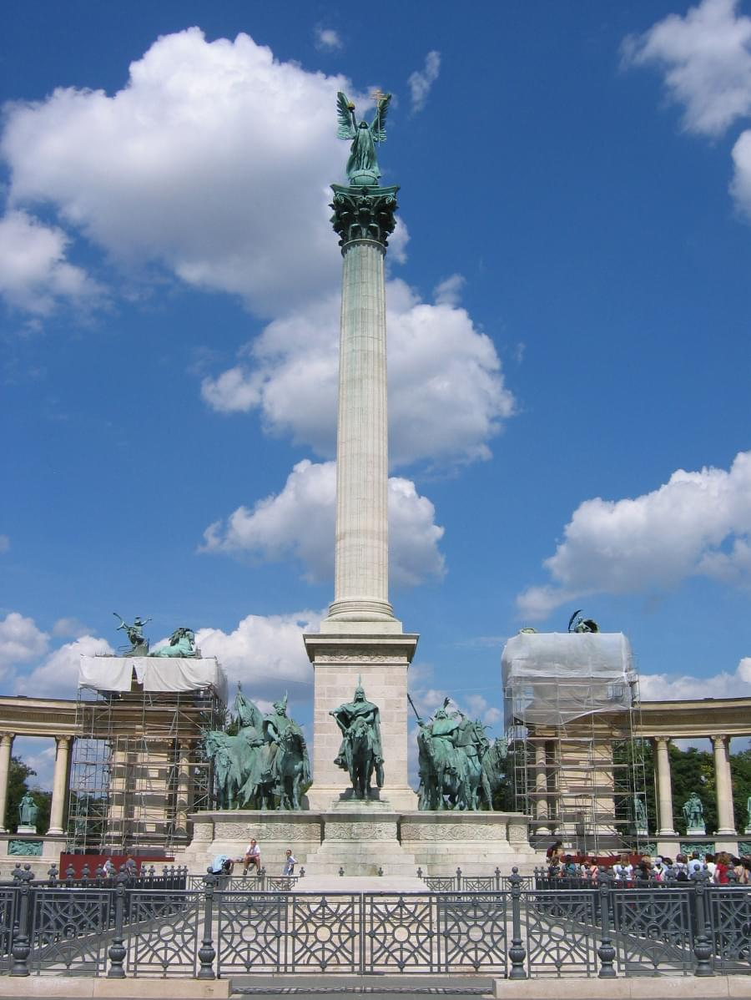
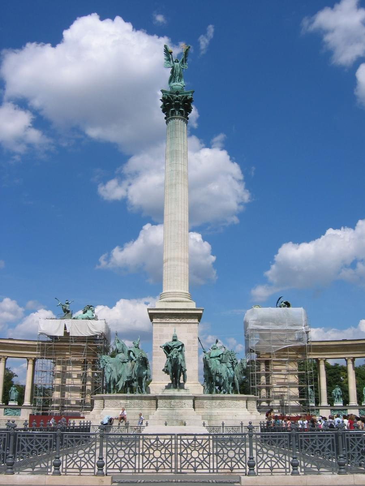

History
The history of Budapest began with Aquincum, originally a Celtic settlement that became the Roman capital of Lower Pannonia. Hungarians arrived in the territory in the 9th century. Their first settlement was pillaged by the Mongols in 1241–1242. The re-established town became one of the centres of Renaissance humanist culture by the 15th century. Following the Battle of Mohács and nearly 150 years of Ottoman rule, the region entered a new age of prosperity, and Budapest became a global city after its unification in 1873. It also became the co-capital of the Austro-Hungarian Empire, a great power that dissolved in 1918, following World War I. Budapest was the focal point of the Hungarian Revolution of 1848, the Hungarian Republic of Councils in 1919, the Battle of Budapest in 1945, and the Hungarian Revolution of 1956.
Main sights and tourism
The neo-Gothic Parliament, the biggest building in Hungary with its 268 metres (879 ft) length, containing amongst other things the Hungarian Crown Jewels. Saint Stephen's Basilica, where the Holy Right Hand of the founder of Hungary, King Saint Stephen is on display. The Hungarian cuisine and café culture: for example, Gerbeaud Café, and the Százéves, Biarritz, Fortuna, Alabárdos, Arany Szarvas, Kárpátia and the world-famous Mátyás Pince Restaurants. There are Roman remains at the Aquincum Museum, and historic furniture at the Nagytétény Castle Museum, just 2 out of 223 museums in Budapest. Another historical museum is the House of Terror, hosted in the building that was the venue of the Nazi Headquarters. The Castle Hill, the River Danube embankments and the whole of Andrássy út have been officially recognized as UNESCO World Heritage Sites.
Castle Hill and the Castle District; there are three churches here, six museums, and a host of interesting buildings, streets and squares. The former Royal Palace is one of the symbols of Hungary – and has been the scene of battles and wars ever since the 13th century. Nowadays it houses two impressive museums and the National Széchenyi Library. The nearby Sándor Palace contains the offices and official residence of the President of Hungary. The seven‑hundred‑year‑old Matthias Church is one of the jewels of Budapest, it is in neo-Gothic style, decorated with coloured shingles and elegant pinnacles. Next to it is an equestrian statue of the first king of Hungary, King Saint Stephen, and behind that is the Fisherman's Bastion, built in 1905 by the architect Frigyes Schulek, the Fishermen's Bastions owes its name to the namesake corporation that during the Middle Ages was responsible of the defence of this part of ramparts, from where opens out a panoramic view of the whole city. Statues of the Turul, the mythical guardian bird of Hungary, can be found in both the Castle District and the Twelfth District.
 
